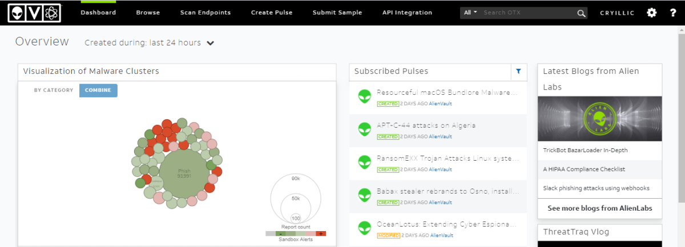
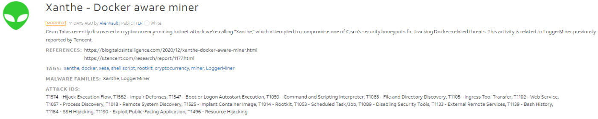
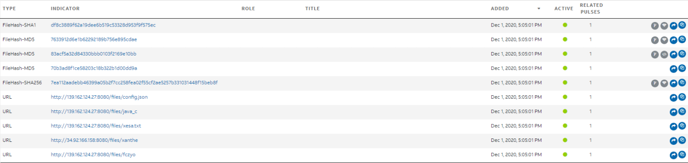
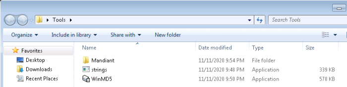
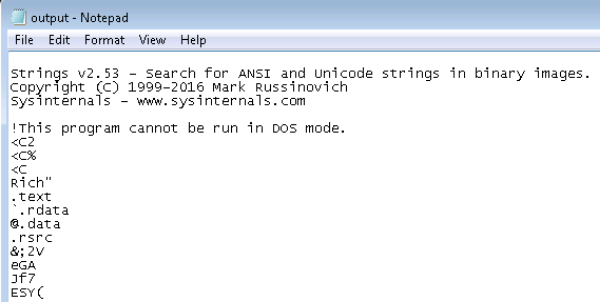
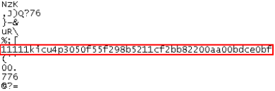
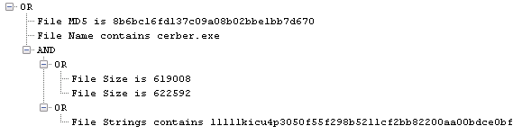
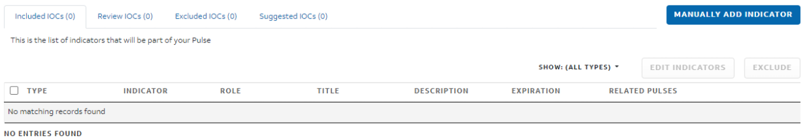

Intro to ISAC
Introduction
Information Sharing and Analysis Centers (ISACs), are used to share and exchange various Indicators of Compromise (IOCs) to obtain threat intelligence. IOCs can include MD5s, IPs, YARA rules, and more. There are many ISACs that can be used to gather threat intelligence including AlienVault OTX, Threat Connect, and MISP.
Terminology:
APT is an acronym for Advanced Persistent Threat. This can be considered a team/group (threat group), or even country (nation-state group), that engages in long-term attacks against organizations and/or countries. The term 'advanced' can be misleading as it will tend to cause us to believe that each APT group all have some super-weapon, e.i. a zero-day exploit, that they use. That is not the case. As we will see a bit later, the techniques these APT groups use are quite common and can be detected with the right implementations in place. You can view FireEye's current list of APT groups here.
TTP is an acronym for Tactics, Techniques, and Procedures, but what does each of these terms mean?
The Tactic is the adversary's goal or objective.
The Technique is how the adversary achieves the goal or objective.
The Procedure is how the technique is executed.
TI is an acronym for Threat Intelligence. Threat Intelligence is an overarching term for all collected information on adversaries and TTPs. You will also commonly hear CTI or Cyber Threat Intelligence which is just another way of saying Threat Intelligence.
IOCs is an acronym for Indicators of Compromise, the indicators for malware and adversary groups. Indicators can include file hashes, IPs, names, etc.
Threat Intelligence:
Threat Intelligence, also known as TI and Cyber Threat Intelligence also known as, CTI, is used to provide information about the threat landscape specifically adversaries and their TTPs. Typically CTI revolves around APT groups and/or other threats, these can be well-known groups or up and coming new threats.
Data must be analyzed to be considered threat intelligence. Once analyzed and actionable, then it becomes threat intelligence. The data needs context around to become intel.
CTI is a precautionary measure that companies use or contribute to so that other corporations do not get hit with the same attacks. Of course, adversaries change their TTPs all the time so the TI landscape is constantly changing.
Vendors and corporations will sometimes share their collected CTI in what are called ISACs or Information Sharing and Analysis Centers. ISACs collect various indicators of an adversary that other corporations can use as a precaution against adversaries.
Threat Intelligence is also broken up into three different types.
◇ Strategic
Assist senior management make informed decisions specifically about the security budget and strategies.
◇ Tactical
Interacts with the TTPs and attack models to identify adversary attack patterns.
◇ Operational
Interact with IOCs and how the adversaries operationalize.
ISAC:
According to the National Council of ISACs, "Information Sharing and Analysis Centers (ISACs) are member-driven organizations, delivering all-hazards threat and mitigation information to asset owners and operators". ISACs can be community-centered or vendor-specific. ISACs include CTI from threat actors as well as mitigation information in the form of IOCs, YARA rules, etc. ISACs maintain situational awareness by sharing and collaborating to maintain CTI, through a National Council of ISACs.
You can view a list of member ISACs here: https://www.nationalisacs.org/member-isacs.
We will be focusing on ISACs as they pertain to cybersecurity and cyber threat intelligence; however, ISACs can be utilized for more than just cybersecurity.
Below is a list of ISACs that can help a blue team we will only be showcasing a few in this room.
• US-CERT
• AlienVault OTX
• ThreatConnect
• MISP
ThreatConnect:
Threat Connect Overview
Threat Connect focuses more on the information and new developments within cybersecurity and the threat landscape and connecting the landscape with indicators. This intelligence can help your team make better-informed decisions on what to prioritize. Threat Connect would fall under the tactical type of threat intelligence.
There is a free and open-source version of Threat Connect available but if you were actually using this on a security team you would want to pay for access to the full platform. Threat Connect is a very large platform with many capabilities but we will only be using it to create our threat intel dashboard and gather indicators from other ISACs like AlienVault OTX. It is important to have multiple sources for the information or intelligence that you collect.
Sign up for a free ThreatConnect account here. (https://threatconnect.com/)
Note: Currently ThreatConnect has gone through a new re-branding and seems to no longer offer a free account.
AlienVault OTX:
AlienVault OTX from AT&T Cybersecurity is one of the main ISACs that is used as an exchange for community maintained threat intelligence.
You will need to create an AlienVault account before you can fully use the application. Go to https://otx.alienvault.com/ and create an account before continuing.
Alienvault uses 'Pulses' to create trackers for various categories. Pulses can be categorized by Malware type, APT or group, and targeted industry. All pulses are community-created excluding official pulses from AlienVault.
Pulses can include a wide variety of IOCs such as File Hashes (MD5, SHA1), IPv4, IPv6, Domain, URL, YARA, CVE, and more.

The main page of OTX you will use is the Dashboard. The default dashboard includes a visualization of the most common active malware broken down by category as well as a list of Subscribed Pulses. By default, only AlienVault's Subscribed Pulses will be listed. This can be expanded upon later.
There are also six different tabs that you can navigate to on the navigation bar, they are outlined below.
◇ Dashboard - This is shown above in the screenshot above. It's the main page of OTX and will provide a brief overview of important intel.
◇ Browse - This will allow you to see all new pulses and sort by various categories to find the newest intel.
◇ Scan Endpoints - This is an automated service called OTX Endpoint Security that will scan endpoints for indicators.
◇ Create Pulse - This will allow you to create your own pulses and contribute to the threat exchange.
◇ Submit Sample - This allows you to submit a malware sample or URL sample which OTX will analyze and generate a report based on the provided sample.
◇ API Integration - Allows synchronization of the threat exchange with other tools for monitoring your environment.
Pulses Overview:
Pulses can consist of a description, tags, indicator types (file hash, Yara, IP, domain, etc.), and threat infrastructure (country of origin). OTX uses pulses as their indicators. A majority of pulses are community-created and maintained. You need to keep this in mind when using pulses for threat intelligence as not all pulses are legit or may contain inaccurate information. Always verify and analyze the indicators used before using them for CTI.
Breaking Down a Pulse
First, we need to understand how to analyze and gather information from a pulse in order to understand how to use OTX's many categories, ways of obtaining threat intelligence, and indicators.
As an example, we will be looking at the Xanthe - Docker aware miner pulse released from the official AlienVault account. You can find it here.
Pulses consist of three main sections: Pulse Description, Indicator Overview, Indicators. We will break down these sections further and identify each component of them.
Pulse Description
The Pulse Description consists of the description itself, references, tags, malware families, and ATT&CK IDs. The three most important parts are the reference section, the description itself, and the ATT&CK IDs. The references can be used to verify the pulse and get further background information on the pulse/indicators. The description can give you a brief overview of what the pulse is for and how it was gathered which can be useful when quickly looking for pulses to use. The ATT&CK IDs can be used to quickly identify what TTPs are being used by the pulse and familiarize yourself with them. For more information about ATT&CK check out Heavenraiza's MITRE room.

Indicator Overview
The Indicator Overview will give you a very brief statistical representation of the indicators within the pulse as well as threat infrastructure. The indicator overview can be useful when looking for a very specific IOC like a file hash or YARA rule, etc.

From here we can see that the pulse has six different types of indicators as well as four different countries that the pulse is originating from.
Note: A majority of pulses do not have threat infrastructure however it can be useful when analyzing a pulse for CTI.
Indicators
Indicators are probably the most important section of the entire pulse. It contains all of the indicators and information about them.

There is a lot of information to break down for each pulse. Look below for more information about each column of the indicators.
• Type - The type of indicator (URL, File Hash, IP, Domain, etc.)
• Indicator - The indicator itself
• Added - Date added, pulses can be updated this can be useful to track the pulses history
• Active - Shows, whether the indicator is still seen in the wild and active, can be useful when selecting pulses to use.
• Related Pulses - Shows pulses that share the same indicator, can be useful to cross-check indicators.
• Extra Information (Advanced) - These are the advanced options including Dynamic Analysis, Network Activity, and YARA rules.¬†
The Advanced section of indicators can contain the most information and allow you to get a better understanding of what you are dealing with. Not all pulses or indicators will contain any advanced information but it can be very useful when available. Below is an example of a YARA detection and dynamic analysis of a binary from a file hash.

Creating IOCs Manually
A large portion of ISACs are community contributions where contributors take the latest malware samples and create IOCs for them. There are a few tools that can help with the creation of IOCs including strings, winmd5free, and Mandiant IOC Editor. There are also tools that can be used to automate this process like Mandiant Redline however that is out of scope for this room.
If you open the Tools folder on the Desktop you will see all of the tools necessary to create IOCs for both the practice binaries and the scenarios.

To begin collecting indicators from a sample you can gather the MD5 file hash using WinMD5. Simply run WinMD5 and select the file you want to gather from.

Practice with the Cerber sample in C:\Users\Jon\Documents\Practice\Practice 1\
To get another baseline of information we can look at the properties of the file to find other indicators including size, name, date created, etc.

To get our final indicator and probably the most unique we need to run strings on the sample to identify if there are any unusual or unique strings that we can use in the IOC. I would advise taking the output into a file to view later.
Syntax: ./strings.exe <path to file> -accepteula > output.txt

You're looking for strings that are human-readable and unique this can include IPs, BTC Addresses, unique function names, etc. You may not always find unique strings right away with some samples. This is where the use of an automated tool like Redline could come in handy as well as for identifying other indicators.
The string below is unique enough that it could be used as an indicator.

Continue looking through the strings output of the Cerber ransomware to find unique strings.
Once you have all of your indicators prepared you can begin creating an IOC with Mandiant IOCe.
1. Create a new IOC by navigating to File > New Indicator.

2. Add in your indicators to the IOC from the Item tab, for more in-depth information on creating IOCs check out the IOCe user guide. 
This is an example of an IOC for the Cerber sample. If this was a real investigation you could then upload it to AlienVault OTX or another ISAC.
Creating Pulses from IOCs:
Note: Please do not take malware outside of the sandbox or create a pulse on OTX without an actual investigation.
You can navigate to the Create Pulse tab of AlienVault OTX to begin creating a pulse.

AlienVault OTX can automatically extract indicators including MD5, SHA265 hashes, etc. Even though OTX automatically extracts indicators it is still suggested to create your own IOCs.

AlienVault OTX also has built-in functionality to take a malware sample under the submit a sample tab and analyze it. This will give back many indicators including MD5 hashes, SHA256 hashes, and PE anomalies as well as related pulses.